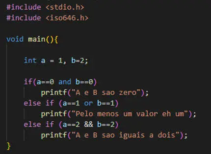
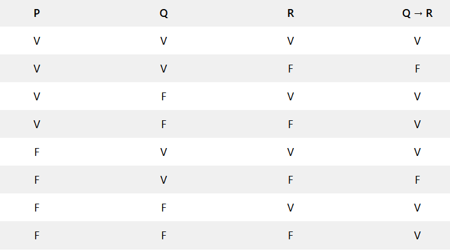

Manutenção de Computadores foi a matéria inicial pela qual me aprofundei, tendo em base o conhecimento básico de software e hardware.
Last updated 3 mins ago
Meu primeiro contato com a programação, iniciando pela mais basica que é a C, e chegando até C++ e Java/Java Script.
Last updated 3 mins agoProjetos Integradores, me fizeram ter a percepção de como as coisas funcionaram em mercado de trabalho, além de me ajudar a melhorar minha apresentação em público.
Last updated 3 mins agoUma das áreas que tive mais dificuldade em me aprofundar, pela questão de IP, Switchs, cabos de Rede, melhor forma de fazer a segurança de tanto uma rede privada, quanto pública etc....
Last updated 3 mins agoAqui aprendi do zero a como criar um banco de dados, saber me localizar, e alterar dados e vinculalos, de forma devida.
Last updated 3 mins ago
Desenvolver algoritmos foi uma parte pela qual, eu tive certa facilidade, em relação a desenvolver a tabela verdade, de uma proposição, conjunção, etc...
Last updated 3 mins ago